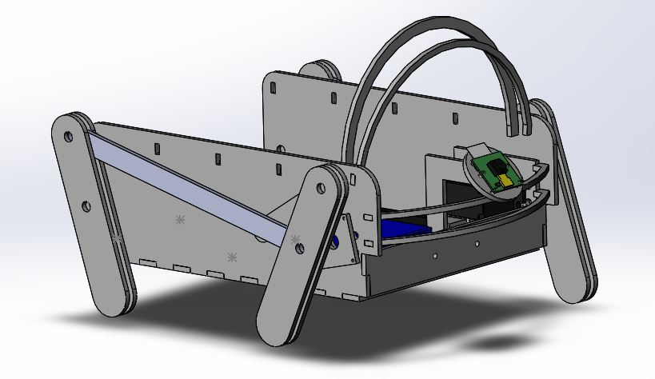
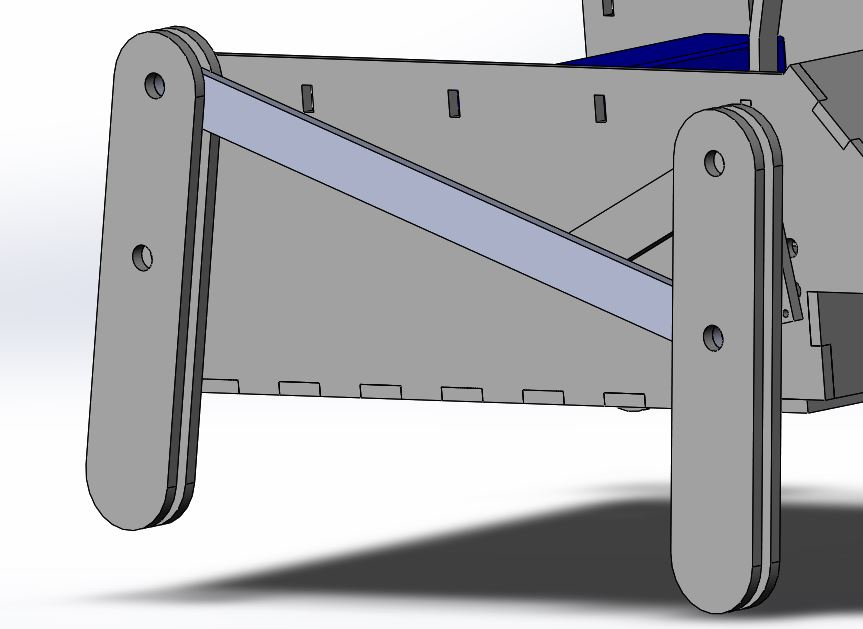
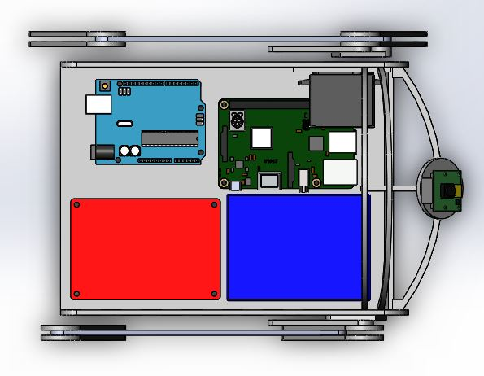
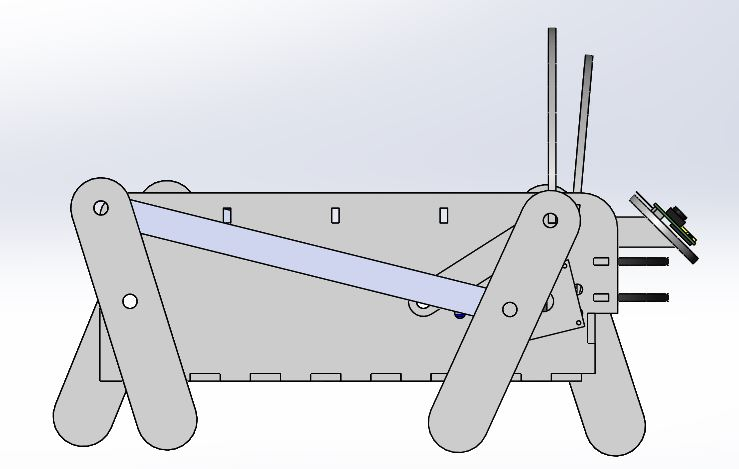
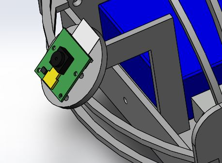
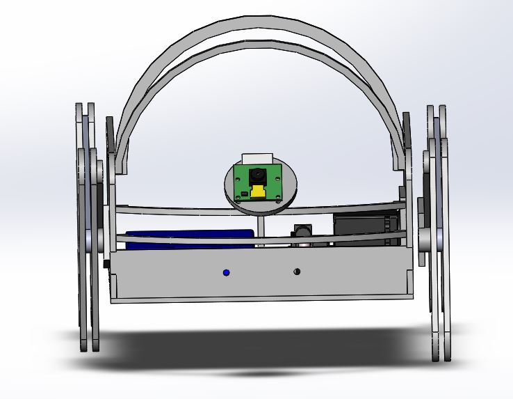

Mechanical Breakdown
There are two main components to the mechanical design: the legs and the chassis. We chose a four-bar linkage mechanism for the legs because it gave the tottering movement we wanted without being too complicated. The leg mechanism uses one continuous rotation servo for each side, giving a total of two.


We used a four-bar linkage mechanism we found online (https://grabcad.com/library/walking-robot-mechanism-1) and adapted it to meet our design criteria. The main alterations we made to the design were scaling it up and increasing its robustness. We increased robustness by thickening the members and doubling them up where we needed more traction with the ground. We scaled up the design to fit our electronics while maintaining the size ratios between the linkages. We used the longest connector piece as our reference since it was the closest approximation to the chassis length and then scaled all the other parts of the linkage by the same factor. The legs are fabricated out of laser-cut fiberboard because it was lightweight and in abundance around our work-space.
Parallel to the mechanical design is integrating the mechanical and electrical systems together. The size of the Wanderer is mostly determined by the space needed for internal electronics and wire routing. The arrangement of the internal electronics ensures that each component can function and the software team can connect to the Raspberry Pi and Arduino for programming.

One of the main goals of our project was to make our robot cute. One of the biggest things we did to accomplish this was the design of its motion and the use of the leg four bar linkage, Another large part was the overall aesthetic design of the chassis. One of our biggest aesthetic design features in the bright fuchsia fur we used as a skin for our robot. In order to accommodate this and improve the overall shape of the chassis, we added a set of ribs to the top of our robot: 5 uniformly spaced and one slightly smaller and tilted forward at the front, and a set of two much smaller ribs on the front. With the fur stretched over them, they gave the robot a cute animal-like shape.

In order to maintain cuteness we also needed to disguise our sensors. We hid the camera as part of the robot's nose design. We mounted it at a 45 degree angle on a stalk that connected to the bottom of the chassis and such out of the robot just above the front ribs. We hid the IR sensor by mounting it slightly inset at the bottom of the front of the robot so that it would not be visible from above.


When it came to final assembly, the large laser-cut pieces were clamped and wood glued, then the smaller pieces were superglued. Any holes for mounting electrical components had press fit threaded inserts, allowing for easier installation than nut and bolt fastening. The leg mechanism to servo connection required one 3D printed piece, and the rest of the leg mechanism was fastened with plastic shafts and spacers.